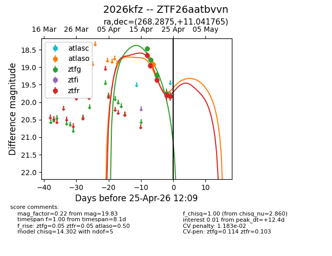
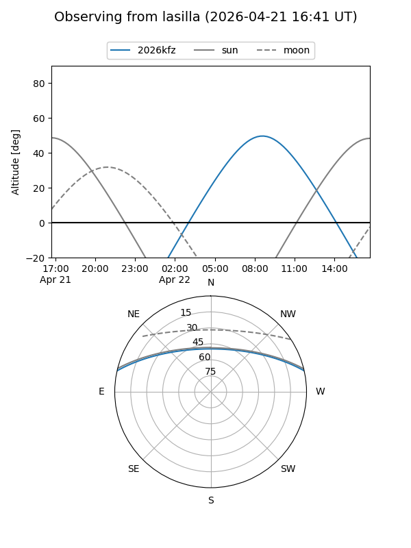
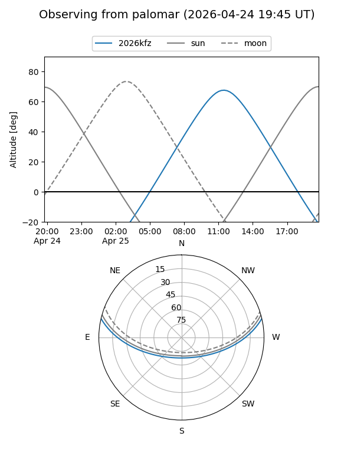
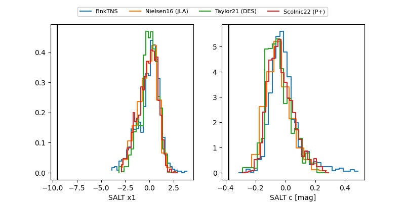

2026kfz
Target 2026kfz at 2026-04-25 12:11
Aliases and brokers:
FINK: link
Lasair: link
ALeRCE: link
TNS: link
YSE: link
alt names
ZTF26aatbvvn (ztf,fink_ztf)
2026kfz (tns,yse)
Coordinates:
equatorial (ra, dec) = 268.2875,+11.04176
equatorial (HMS+DMS) = 17:53:08.99,+11:02:30.35
galactic (l, b) = (36.4172,+17.88484)
Flags:
likely cv
Photometry:
last atlaso=18.92, ztfg=19.76, ztfr=19.83
1 atlaso, 4 ztfg, 5 ztfr detections
Lightcurve

Visibility


Additional plots
